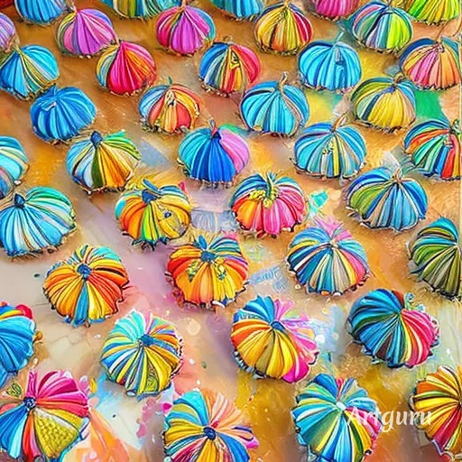

文字+圖片練習 學號:91034217 姓名:楊慧玟
料理陳列展示
彩虹馬林糖
準備材料
- 4 杯糖粉
- 3 大匙蛋白粉
- 1/2 杯溫水
- 1/2 茶匙檸檬汁
- 食用色素（紅、橙、黃、綠、藍、紫）
步驟：
- 在大碗中將糖粉和蛋白粉拌勻。
- 逐漸加入溫水，同時不斷攪拌，直到混合物光滑。
- 加入檸檬汁，繼續攪拌混合。
- 分別將糖霜分裝到幾個碗中，視需要添加食用色素調出不同顏色。
- 將不同顏色的糖霜裝入裱花袋中，或者使用塑膠袋，在一角剪小口。
- 在已經冷卻的糕點或點心表面上，以心儀的方式擠出彩虹蛋白糖霜。
- 等待糖霜完全凝固後，即可享用彩色繽紛的點心。
典故和好處
彩虹蛋白糖霜通常是一種用於裝飾糕點、
餅乾等甜點的糖霜，以繽紛的顏色和光滑的質地為點心增添視覺效果。
